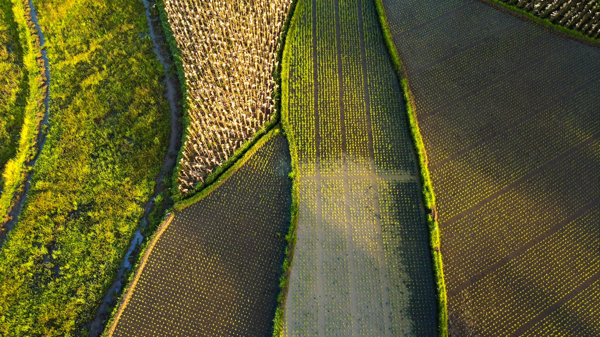

|
Home |
Energía
|
Comida y Agua
|
Objetivos de Desarrollo Sustentable
|
IntroducciónEsta iniciativa consiste en poder crear mejores cosas, con menos recursos, y productos con una duración y eficiencia máxima. Busca desvincular el crecimiento económico de la explotación de recursos naturales, creando así estilos de vida sostenibles, donde se compra y se acerca al cambio de una economía más verde.(Moran, 2020) |

ENERGÍALa energía es uno de los pilares del desarrollo humano. Actualmente, el papel del sistema energético es una de las prioridades en las agendas políticas, sociales, económicas y científicas debido al inmenso impacto que tiene en todo el planeta.(C. de Pablo, 2021) |
COMIDALa comida es vital para la salud, el bienestar y la cultura. Más que un bien, es un derecho, es vida y debe ser repartido para satisfacer necesidades humanas. La producción de comida de manera sostenible promueve el desarrollo agrícola, una dieta sostenible y un futuro más verde.(C. de Pablo, 2021) |
AGUAEl agua es esencial para la vida, la salud y el desarrollo sostenible. Es un bien económico y social que debe ser distribuido para satisfacer las necesidades humanas básicas y permitir el funcionamiento de los ecosistemas y la economía, incluyendo la seguridad alimentaria.(C. de Pablo, 2021) |
| |